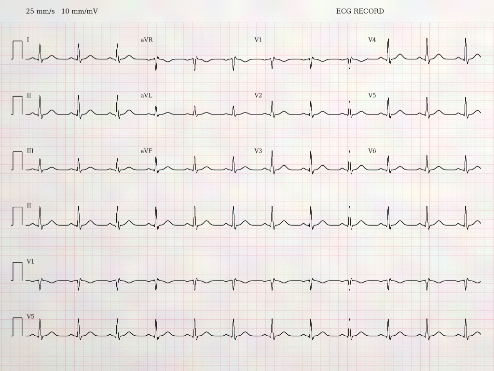
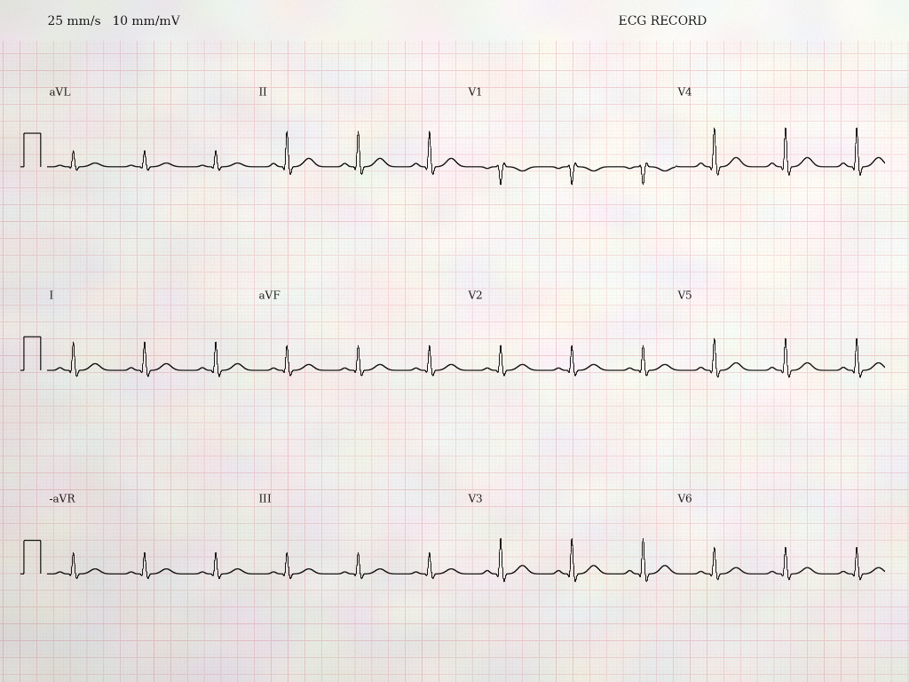

Layouts & calibration
Layout names count rows × columns. Thus 12x1 prints twelve full-duration rows, while 6x2 prints six rows with two lead windows each. +r1, +r2 and +r3 add full-duration rhythm strips.
Pick a layout#
from ecg_gpu import ECGImageLayer, Choice
render = ECGImageLayer(parameters={
"layout": Choice(["3x4", "3x4+r3", "6x2", "12x1"]),
"rhythm_leads": ["II", "V1", "V5"],
})

The standard library has 30 layouts. Inspect all of them in the gallery.
| Layout | Short rows | Rhythm strips |
|---|---|---|
3x4 |
4, 4, 4 | 0 |
6x2 |
2, 2, 2, 2, 2, 2 | 0 |
12x1 |
1, 1, 1, 1, 1, 1, 1, 1, 1, 1, 1, 1 | 0 |
2x6 |
6, 6 | 0 |
3x4+r1 |
4, 4, 4 | 1 |
3x4+r2 |
4, 4, 4 | 2 |
3x4+r3 |
4, 4, 4 | 3 |
6x2+r1 |
2, 2, 2, 2, 2, 2 | 1 |
6x2+r2 |
2, 2, 2, 2, 2, 2 | 2 |
6x2+r3 |
2, 2, 2, 2, 2, 2 | 3 |
12x1+r1 |
1, 1, 1, 1, 1, 1, 1, 1, 1, 1, 1, 1 | 1 |
12x1+r2 |
1, 1, 1, 1, 1, 1, 1, 1, 1, 1, 1, 1 | 2 |
12x1+r3 |
1, 1, 1, 1, 1, 1, 1, 1, 1, 1, 1, 1 | 3 |
2x6+r1 |
6, 6 | 1 |
2x6+r2 |
6, 6 | 2 |
2x6+r3 |
6, 6 | 3 |
4x3 |
3, 3, 3, 3 | 0 |
4x3+r1 |
3, 3, 3, 3 | 1 |
4x3+r2 |
3, 3, 3, 3 | 2 |
4x3+r3 |
3, 3, 3, 3 | 3 |
3x4-cabrera |
4, 4, 4 | 0 |
3x4-cabrera+r1 |
4, 4, 4 | 1 |
3x4-cabrera+r2 |
4, 4, 4 | 2 |
3x4-cabrera+r3 |
4, 4, 4 | 3 |
6x2-cabrera |
2, 2, 2, 2, 2, 2 | 0 |
12x1-cabrera |
1, 1, 1, 1, 1, 1, 1, 1, 1, 1, 1, 1 | 0 |
2x1-long |
1, 1 | 0 |
3x1-long |
1, 1, 1 | 0 |
1x1-long |
1 | 0 |
1x12 |
12 | 0 |
Sequential and simultaneous windows#
With sequential=True, each short-row column covers a successive part of the recording. With sequential=False, each column starts at time zero. Rhythm strips span the full printed duration in both modes.
Check metadata['start_s'], metadata['end_s'], metadata['lead_id'] and metadata['active'] when supervising waveform recovery. A repeated lead can occur in several printed slots.
Cabrera ordering#
Cabrera layouts print -aVR. The output channel retains canonical aVR identity, and instance_amplitude_sign is -1 for the inverted printed occurrence. The source waveform remains in standard lead order.

Speed, gain and pulses#
| Parameter | Index 0 | Index 1 | Index 2 |
|---|---|---|---|
speed_index |
12.5 mm/s | 25 mm/s | 50 mm/s |
gain_index |
5 mm/mV | 10 mm/mV | 20 mm/mV |
render = ECGImageLayer(parameters={
"speed_index": 1, "gain_index": 1, "pulse_present": 1.0,
})
pulse_present controls the 1 mV, 0.2 s calibration mark. Headers and labels can be hidden independently. For classification targets, unknown units are represented when explicit unit-text support is unavailable. This support test measures geometry, not OCR readability.
Long and dense arrangements need an appropriate aspect ratio. Use a tall page for 12x1 and a wide page for 1x12. The layout does not automatically increase image resolution.